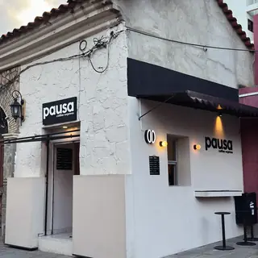
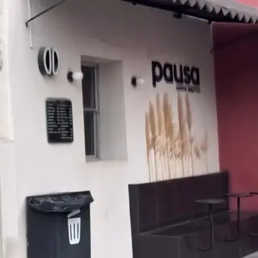
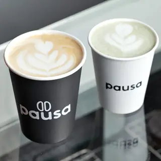
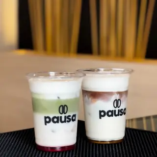
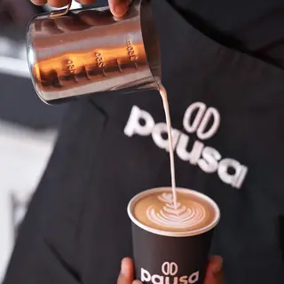

5,0 de 5 · 7 reseñas · Cafetería
Lun–sáb · 8–12 y 15–20
Cafetería para llevar en el centro de Tarija. Café y matcha listos para retirar por ventanilla: pides por WhatsApp, pagas con QR y pasas a recoger sin hacer fila.
C. Sucre entre Virginio Lema y 15 de Abril, Tarija · ventanilla de retiro
64581332 (en la maqueta no se enlaza, para no llamar al local)
Julia Corez · 5 de 5 · hace 7 meses (al 05/09/2026)
«…te sirven súper rápido» [VERIFICAR: texto completo]
Georgia Rose · 5 de 5 · hace 6 meses (al 09/09/2026)
«…hidden gem» [VERIFICAR: texto completo]
Maqueta de propuesta (EC2, UCB): la ficha completa del local principal. La sucursal (Av. La Paz 249, entre Avaroa y Las Américas) lleva una ficha propia con el mismo nombre, compra en mostrador.
Reclamar y verificar la ficha, completarla y responder las reseñas depende del dueño: PROPUESTO. Los botones funcionan: Cómo llegar abre Maps, Sitio web abre la propuesta y Menú abre el catálogo del número de demostración.